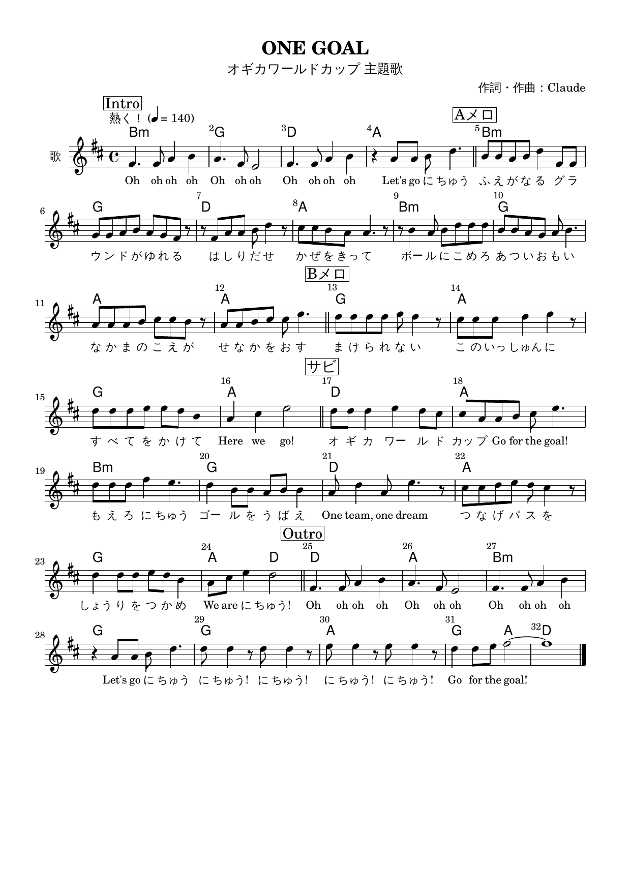

<title>ONE GOAL</title>
<meta name="claude:viewport-fit-sides" content="cover">
<link rel="preconnect" href="https://fonts.googleapis.com">
<link rel="stylesheet" href="https://fonts.googleapis.com/css2?family=Dela+Gothic+One&family=Zen+Kaku+Gothic+New:wght@400;700&family=Oswald:wght@500;700&display=swap">
<style>
/* Layout: ピッチ（芝生）の帯をヒーローに、下は白線で区切ったスコアボード風の情報ブロック */
:root {
  --bg: #f2f5ef;
  --surface: #ffffff;
  --ink: #12261a;
  --muted: #5a6b5f;
  --pitch: #1d6b3e;
  --pitch-2: #22794a;
  --chalk: #ffffff;
  --card: #f5b800;
  --line: #d5ddd3;
  --hl-bg: #fff3c4;
  --display: "Dela Gothic One", "Zen Kaku Gothic New", "Hiragino Sans", sans-serif;
  --body: "Zen Kaku Gothic New", "Hiragino Sans", "Yu Gothic", sans-serif;
  --num: "Oswald", "Arial Narrow", sans-serif;
}
@media (prefers-color-scheme: dark) {
  :root:not([data-theme="light"]) {
    --bg: #0d1712; --surface: #14231a; --ink: #e6efe8; --muted: #9cb0a2;
    --pitch: #17573a; --pitch-2: #1b6342; --chalk: #f4fbf6; --card: #ffc627;
    --line: #26392d; --hl-bg: #3a3413; color-scheme: dark;
  }
}
:root[data-theme="dark"] {
  --bg: #0d1712; --surface: #14231a; --ink: #e6efe8; --muted: #9cb0a2;
  --pitch: #17573a; --pitch-2: #1b6342; --chalk: #f4fbf6; --card: #ffc627;
  --line: #26392d; --hl-bg: #3a3413; color-scheme: dark;
}
* { box-sizing: border-box; }
body { background: var(--bg); color: var(--ink); font-family: var(--body); font-size: 16px; line-height: 1.75; }
.wrap { max-width: 880px; margin: 0 auto; padding-left: max(16px, env(safe-area-inset-left, 0px)); padding-right: max(16px, env(safe-area-inset-right, 0px)); }

/* ---- Hero: ピッチ ---- */
.hero { background:
    repeating-linear-gradient(90deg, var(--pitch) 0 64px, var(--pitch-2) 64px 128px);
  color: var(--chalk); position: relative; overflow: hidden; }
.hero::before, .hero::after { content: ""; position: absolute; pointer-events: none; border: 2px solid color-mix(in srgb, var(--chalk) 45%, transparent); }
.hero::before { width: 240px; height: 240px; border-radius: 50%; right: -60px; top: 50%; transform: translateY(-50%); }
.hero::after { inset: 14px; border-radius: 2px; }
.hero .wrap { position: relative; z-index: 1; padding-block: 44px 36px; display: grid; gap: 18px; }
.eyebrow { font-family: var(--body); font-weight: 700; letter-spacing: .12em; font-size: 13px; opacity: .9; }
h1 { font-family: var(--num); font-weight: 700; font-size: clamp(56px, 13vw, 112px); line-height: .9; margin: 0; letter-spacing: .01em; text-wrap: balance; }
.subtitle { font-family: var(--display); font-size: clamp(18px, 4vw, 26px); margin: 0; line-height: 1.35; }
.chips { display: flex; flex-wrap: wrap; gap: 8px; }
.chip { font-family: var(--num); font-size: 14px; letter-spacing: .05em; border: 1.5px solid color-mix(in srgb, var(--chalk) 70%, transparent); border-radius: 3px; padding: 2px 10px; font-variant-numeric: tabular-nums; }

/* ---- Player ---- */
.player { display: flex; align-items: center; gap: 14px; background: color-mix(in srgb, #000 28%, transparent); border-radius: 6px; padding: 12px 14px; max-width: 560px; }
.play { flex: none; width: 56px; height: 56px; border-radius: 50%; border: none; background: var(--card); color: #1a1a1a; cursor: pointer; display: grid; place-items: center; }
.play:focus-visible { outline: 3px solid var(--chalk); outline-offset: 3px; }
.play svg { width: 24px; height: 24px; fill: currentColor; }
.track { flex: 1; min-width: 0; display: grid; gap: 6px; }
.now { font-weight: 700; font-size: 14px; min-height: 1.4em; white-space: nowrap; overflow: hidden; text-overflow: ellipsis; }
.bar { position: relative; height: 8px; background: color-mix(in srgb, var(--chalk) 25%, transparent); border-radius: 4px; cursor: pointer; }
.bar span { position: absolute; inset: 0 auto 0 0; width: 0; background: var(--chalk); border-radius: 4px; }
.time { font-family: var(--num); font-size: 13px; font-variant-numeric: tabular-nums; opacity: .9; }

/* ---- Sections ---- */
main .wrap { display: grid; gap: 48px; padding-block: 40px 64px; }
h2 { font-family: var(--display); font-weight: 400; font-size: 22px; margin: 0 0 14px; display: flex; align-items: baseline; gap: 12px; }
h2 small { font-family: var(--num); font-size: 13px; letter-spacing: .14em; color: var(--muted); }
p { margin: 0; }

/* 構成ストリップ（小節数に比例） */
.structure { display: flex; height: 54px; border: 2px solid var(--ink); border-radius: 3px; overflow: hidden; }
.structure div { display: grid; place-items: center; text-align: center; font-weight: 700; font-size: 13px; line-height: 1.2; border-right: 2px solid var(--ink); padding: 0 2px; min-width: 0; }
.structure div:last-child { border-right: none; }
.structure small { display: block; font-family: var(--num); font-weight: 500; font-size: 11px; opacity: .75; }
.s-in, .s-out { background: var(--surface); }
.s-a { background: color-mix(in srgb, var(--pitch) 18%, var(--surface)); }
.s-b { background: color-mix(in srgb, var(--pitch) 35%, var(--surface)); }
.s-c { background: var(--card); color: #1a1a1a; }
.note { color: var(--muted); font-size: 14px; margin-top: 10px; }

/* 歌詞 */
.lyrics { display: grid; gap: 26px; }
.part { display: grid; grid-template-columns: 76px 1fr; gap: 14px; }
.tag { font-family: var(--num); font-weight: 700; font-size: 13px; letter-spacing: .08em; padding-top: 6px; color: var(--muted); }
.part.chorus .tag { color: var(--pitch); }
.lines { display: grid; gap: 4px; min-width: 0; }
.line { padding: 4px 10px; margin-left: -10px; border-radius: 4px; transition: background .2s; }
.line .chords { display: block; font-family: var(--num); font-size: 12px; color: var(--muted); letter-spacing: .06em; line-height: 1.3; }
.line .words { font-size: 20px; font-weight: 700; }
.part.chorus .words { font-family: var(--display); font-weight: 400; font-size: 22px; }
.line.shout .words { color: var(--pitch); }
.line.on { background: var(--hl-bg); }
mark { background: none; color: inherit; border-bottom: 3px solid var(--card); padding: 0 1px; }

/* 楽譜 */
.score { background: #fff; border: 1px solid var(--line); border-radius: 4px; overflow-x: auto; }
.score img { display: block; width: 100%; min-width: 620px; max-width: none; }

/* 使い方 */
.tips { display: grid; grid-template-columns: repeat(auto-fit, minmax(240px, 1fr)); gap: 14px; }
.tip { background: var(--surface); border: 1px solid var(--line); border-radius: 4px; padding: 16px 18px; display: grid; gap: 6px; align-content: start; }
.tip b { font-size: 16px; }
.tip p { font-size: 15px; color: var(--muted); line-height: 1.7; }
.foot { color: var(--muted); font-size: 13px; border-top: 1px solid var(--line); padding-top: 16px; }

@media (max-width: 520px) {
  .part { grid-template-columns: 1fr; gap: 4px; }
  .tag { padding-top: 0; }
  .structure { height: 60px; }
  .structure div { font-size: 11px; }
  .line .words { font-size: 18px; }
  .part.chorus .words { font-size: 19px; }
}
@media (prefers-reduced-motion: reduce) { .line { transition: none; } }
</style>

<header class="hero">
  <div class="wrap">
    <div class="eyebrow">オギカワールドカップ 主題歌</div>
    <h1>ONE GOAL</h1>
    <p class="subtitle">燃えろ二中、ゴールを奪え。</p>
    <div class="chips">
      <span class="chip">♩ = 140</span><span class="chip">4/4</span><span class="chip">KEY D / Bm</span><span class="chip">32 BARS · 0:58</span>
    </div>
    <div class="player">
      <button class="play" id="play" aria-label="再生">
        <svg id="ico" viewBox="0 0 24 24"><path d="M7 4.5v15l13-7.5z"/></svg>
      </button>
      <div class="track">
        <div class="now" id="now">▶ を押すと、歌詞が流れに合わせて光ります</div>
        <div class="bar" id="bar" role="slider" aria-label="再生位置" tabindex="0"><span id="prog"></span></div>
        <div class="time"><span id="cur">0:00</span> / <span id="dur">0:58</span></div>
      </div>
    </div>
    <audio id="audio" src="one_goal.mp3" preload="metadata"></audio>
  </div>
</header>

<main>
  <div class="wrap">

    <section>
      <h2>曲の構成 <small>STRUCTURE</small></h2>
      <div class="structure" aria-label="曲の構成">
        <div class="s-in" style="flex:4">イントロ<small>4小節</small></div>
        <div class="s-a" style="flex:8">Aメロ<small>8小節</small></div>
        <div class="s-b" style="flex:4">Bメロ<small>4小節</small></div>
        <div class="s-c" style="flex:8">サビ<small>8小節</small></div>
        <div class="s-out" style="flex:8">アウトロ<small>8小節</small></div>
      </div>
      <p class="note">イントロとアウトロは、スタジアムの応援のような「オーオオオ」の掛け声。最後は「二中！二中！」のコールで締めます。</p>
    </section>

    <section>
      <h2>歌詞 <small>LYRICS</small></h2>
      <div class="lyrics" id="lyrics">
        <div class="part">
          <div class="tag">INTRO</div>
          <div class="lines">
            <div class="line shout" data-t="0" data-b="3"><span class="chords">Bm　G　D　A</span><span class="words">Oh oh-oh-oh, Oh oh-oh!</span></div>
            <div class="line shout" data-t="3" data-b="4"><span class="chords"></span><span class="words">Let's go <mark>二中</mark>!</span></div>
          </div>
        </div>
        <div class="part">
          <div class="tag">Aメロ</div>
          <div class="lines">
            <div class="line" data-t="4" data-b="6"><span class="chords">Bm　G</span><span class="words">笛が鳴る　グラウンドが揺れる</span></div>
            <div class="line" data-t="6" data-b="8"><span class="chords">D　A</span><span class="words">走り出せ　風を切って</span></div>
            <div class="line" data-t="8" data-b="10"><span class="chords">Bm　G</span><span class="words">ボールに込めろ　熱い想い</span></div>
            <div class="line" data-t="10" data-b="12"><span class="chords">A</span><span class="words">仲間の声が　背中を押す</span></div>
          </div>
        </div>
        <div class="part">
          <div class="tag">Bメロ</div>
          <div class="lines">
            <div class="line" data-t="12" data-b="14"><span class="chords">G　A</span><span class="words">負けられない　この一瞬に</span></div>
            <div class="line" data-t="14" data-b="16"><span class="chords">G　A</span><span class="words">すべてを懸けて　Here we go!</span></div>
          </div>
        </div>
        <div class="part chorus">
          <div class="tag">サビ</div>
          <div class="lines">
            <div class="line" data-t="16" data-b="18"><span class="chords">D　A</span><span class="words">オギカワールドカップ　Go for the goal!</span></div>
            <div class="line" data-t="18" data-b="20"><span class="chords">Bm　G</span><span class="words">燃えろ <mark>二中</mark>　ゴールを奪え</span></div>
            <div class="line" data-t="20" data-b="22"><span class="chords">D　A</span><span class="words">One team, one dream　つなげパスを</span></div>
            <div class="line" data-t="22" data-b="24"><span class="chords">G　A　D</span><span class="words">勝利をつかめ　We are <mark>二中</mark>!</span></div>
          </div>
        </div>
        <div class="part">
          <div class="tag">OUTRO</div>
          <div class="lines">
            <div class="line shout" data-t="24" data-b="27"><span class="chords">D　A　Bm</span><span class="words">Oh oh-oh-oh, Oh oh-oh!</span></div>
            <div class="line shout" data-t="27" data-b="28"><span class="chords">G</span><span class="words">Let's go <mark>二中</mark>!</span></div>
            <div class="line shout" data-t="28" data-b="30"><span class="chords">G　A</span><span class="words"><mark>二中</mark>! <mark>二中</mark>! <mark>二中</mark>! <mark>二中</mark>!</span></div>
            <div class="line shout" data-t="30" data-b="33"><span class="chords">G　A　D</span><span class="words">Go for the goal!</span></div>
          </div>
        </div>
      </div>
    </section>

    <section>
      <h2>楽譜 <small>SCORE</small></h2>
      <div class="score"></div>
      <p class="note">メロディは D〜F#（二中！の最高音）の範囲で、全員がユニゾンで歌える高さにしています。</p>
    </section>

    <section>
      <h2>授業での使い方 <small>IN CLASS</small></h2>
      <div class="tips">
        <div class="tip"><b>入場・整列のときに</b><p>イントロの掛け声は約7秒。チームごとに入場し、「Let's go 二中！」で全員そろって構えます。</p></div>
        <div class="tip"><b>ウォーミングアップに</b><p>♩=140 は小走りのステップに合うテンポ。Aメロはジョグ、サビはサイドステップやハイニーに切り替えると、曲の盛り上がりと運動の強さがそろいます。</p></div>
        <div class="tip"><b>掛け声パートはみんなで</b><p>「Oh oh-oh-oh」と「二中！」のコールは、歌が苦手な生徒も声を出しやすい部分です。ここだけ全員で叫ぶ形でも成立します。</p></div>
      </div>
    </section>

    <p class="foot">作詞・作曲：Claude（オギカワールドカップのために書き下ろしたオリジナル曲）。音源はシンセサイザーによる伴奏とメロディガイドで、歌声は入っていません。</p>
  </div>
</main>

<script>
(function () {
  var BAR = 4 * 60 / 140; // 1小節の秒数
  var audio = document.getElementById('audio');
  var btn = document.getElementById('play');
  var ico = document.getElementById('ico');
  var prog = document.getElementById('prog');
  var bar = document.getElementById('bar');
  var cur = document.getElementById('cur');
  var durEl = document.getElementById('dur');
  var now = document.getElementById('now');
  var lines = Array.prototype.slice.call(document.querySelectorAll('.line'));
  var PLAY = 'M7 4.5v15l13-7.5z', PAUSE = 'M6 4.5h4v15H6zM14 4.5h4v15h-4z';

  function fmt(s) { s = Math.max(0, Math.floor(s)); return Math.floor(s / 60) + ':' + String(s % 60).padStart(2, '0'); }
  function setIcon(p) { ico.firstChild.setAttribute('d', p ? PAUSE : PLAY); btn.setAttribute('aria-label', p ? '一時停止' : '再生'); }

  btn.addEventListener('click', function () {
    if (audio.paused) { audio.play().catch(function () { now.textContent = '音源を再生できませんでした。もう一度押してください。'; }); }
    else audio.pause();
  });
  audio.addEventListener('play', function () { setIcon(true); });
  audio.addEventListener('pause', function () { setIcon(false); });
  audio.addEventListener('loadedmetadata', function () { if (isFinite(audio.duration)) durEl.textContent = fmt(audio.duration); });
  audio.addEventListener('ended', function () { lines.forEach(function (l) { l.classList.remove('on'); }); now.textContent = 'ナイスゲーム！ もう一度聴くなら ▶'; });

  var active = null;
  audio.addEventListener('timeupdate', function () {
    var t = audio.currentTime, d = audio.duration || 58.3;
    prog.style.width = (100 * t / d) + '%';
    cur.textContent = fmt(t);
    var b = t / BAR, hit = null;
    lines.forEach(function (l) { if (b >= +l.dataset.t && b < +l.dataset.b) hit = l; });
    if (hit !== active) {
      if (active) active.classList.remove('on');
      if (hit) { hit.classList.add('on'); now.textContent = hit.querySelector('.words').textContent; }
      active = hit;
    }
  });
  function seek(x) {
    var r = bar.getBoundingClientRect();
    if (audio.duration) audio.currentTime = Math.min(1, Math.max(0, (x - r.left) / r.width)) * audio.duration;
  }
  bar.addEventListener('click', function (e) { seek(e.clientX); });
  bar.addEventListener('keydown', function (e) {
    if (e.key === 'ArrowRight') audio.currentTime += 5;
    if (e.key === 'ArrowLeft') audio.currentTime -= 5;
  });
  lines.forEach(function (l) {
    l.style.cursor = 'pointer';
    l.addEventListener('click', function () { audio.currentTime = +l.dataset.t * BAR; if (audio.paused) audio.play().catch(function () {}); });
  });
})();
</script>
